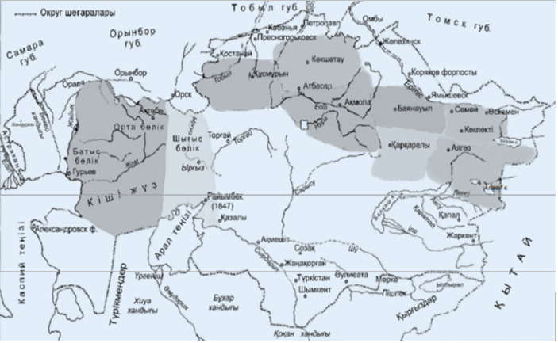

1) XVIII ғасырдың басындағы жағдай
XVIII ғасырдың басында қазақ хандығының бір тұтастығы жойылды. Қазақ жеріне тұс-тұстан қауіп төнді: Батыстан – Еділ қалмақтары, Орал казактары, солтүстік-батыстан – башқұрттар, солтүстіктен – Сібір казактары, шығыстан – жоңғарлар, оңтүстіктер – Орта Азия хандықтары (Хиуа, Бұхар, Қоқан хандықтары).

2) Шайқастар: жерлері мен мерзімдері
Шайқастардың орындары мен жылдарын көрсететін тарихи карта.

3) Абылай хан кезіндегі Қазақ хандығы
Абылай тұсындағы саяси кеңею, ел аумағы және негізгі аймақтар көрсетілетін карта.

4) XIX ғасырдағы Қазақстан
XIX ғасырдағы әкімшілік өзгерістер, аймақтар, негізгі оқиғалар.

5) Ресей империясына қарсы көтерілістер
Сырым Датұлы, Исатай–Махамбет, Кенесары, Жанқожа, Есет көтерілістерінің карталары.